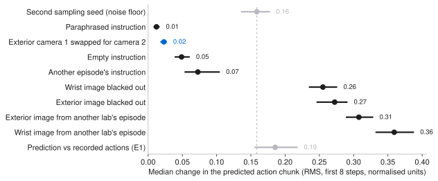
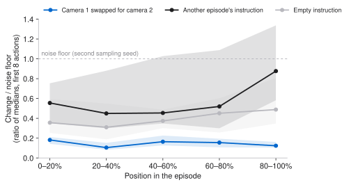
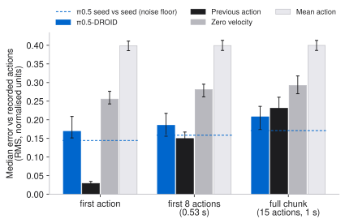

Offline probes of Physical Intelligence's open π0.5-DROID policy on 500 states from DROID. Swapping one exterior camera for the other barely changes the actions, another scene changes them a lot, and a wrong instruction changes them less than the policy's own sampling noise.
Experimental design
DROID argues that diversity makes policies generalize: 564 scenes, 52 buildings, 86 tasks, and 1,417 exterior camera viewpoints, because the collection software prompts collectors to move and re-calibrate the cameras. In the paper's words, "camera viewpoint diversity allows for greater generalization to new instructions and camera angles". π0.5-DROID is π0.5 fine-tuned on DROID and released by Physical Intelligence. Without a robot, how much do its actions depend on the camera view, on the scene and on the instruction?
H1, camera diversity buys view invariance. For the same state and the same sampling noise, the actions predicted from exterior camera 2 are about as close to those from camera 1 as two sampling seeds are to each other.
H2, language matters early. Replacing the instruction moves the actions well above the sampling noise early in an episode, and less late.
Both hypotheses and their decision rules were written down before the GPU run.
Implementation
| Model | pi05_droid from openpi (commit 215abfb), in JAX. Inputs: one exterior image, the wrist image, the joint and gripper state, and the instruction. Output: 15 actions of 7 joint velocities and a gripper position. |
|---|---|
| Data | droid_100, the first 100 DROID episodes (RLDS v1.0.0, 13 labs, 15 Hz). Each episode is cut into five equal phases and one step is drawn in each: 500 states. |
| Probes | Exterior camera 2 in place of camera 1; another episode's instruction; an empty instruction; a paraphrase; a black wrist or exterior image; the wrist or exterior image of an episode from another lab. |
| Yardstick | The noise floor: the change from a second sampling seed on the same input. The probes use the same seed as the base prediction, so a difference comes from the input, not from sampling. |
| Measure | RMS change over the first 8 actions (0.53 s, the part openpi's DROID client executes), in the model's normalised units. Medians over states, with 95% intervals from 10,000 bootstrap resamples of whole episodes. |
| Compute | One RTX 3090: 5,140 calls at 177 ms each, about 30 minutes. |
What the model saw in training comes from openpi's open-source DROID loader, which openpi calls "an approximate open-source reproduction of the pi05-DROID training pipeline": each sample uses exterior camera 1 or 2 at random and one of the instructions at random, and only successful episodes.
Empirical observations

Swapping exterior camera 1 for camera 2 changes the actions by 0.023 [0.019, 0.027], 0.15× [0.12, 0.16] the noise floor. The change is above the floor in 1.4% of states. It is the same in every phase of the episode and in all 13 labs (0.06× to 0.24×), and the error against the recorded actions does not change (paired difference 0.000). The two views of one scene are very different images: the median pixel difference is 67 of 255.
The model does not ignore the exterior image. The exterior image of an episode from another lab changes the actions by 0.31, 1.9× the floor and 13× the swap, and raises the error against the recorded actions by 0.14. The model reads the scene, not the viewpoint. The decision rule expected a ratio near 1 and did not foresee one this far below 1, so H1 holds in a stronger form than stated.


| Instruction (46 annotated episodes) | Change | × noise floor | States above 2× the floor |
|---|---|---|---|
| Another episode's | 0.073 | 0.58 [0.43, 0.85] | 19% |
| Empty | 0.049 | 0.39 [0.32, 0.48] | 5% |
| Paraphrase (31 episodes) | 0.012 | 0.09 [0.07, 0.12] |
A wrong instruction moves the actions less than the sampling noise in the median state. The trend runs against H2: the ratio is 0.51 early in the episode and 0.82 late, and the difference is not significant. The effect is concentrated in a few states: 19% change by more than twice the floor, and the largest by 11×. The true instruction still carries information: another episode's instruction raises the error against the recorded actions by 0.019 [0.011, 0.029], and an empty one by 0.008. Paraphrases are almost free.
The error against the recorded actions is 0.185 [0.156, 0.217], only 1.17× [1.04, 1.33] the noise floor. Where the policy is uncertain, it also disagrees with the operator (Spearman 0.72 between the two per state). It beats zero velocity (0.281) and the mean action (0.399). Repeating the previous recorded action, which the model does not get, wins for the first action and over 8 steps; π0.5-DROID wins over the full 1 s chunk (paired −0.020 [−0.036, −0.005]). On the 19 failed episodes the error is 0.370, against 0.153 on the 81 successful ones.
54 of the 100 episodes have no instruction, and all 19 failures are among them, so the instruction probes use the 46 annotated episodes. The likely reason is the version: openpi's training notes say that v1.0.0 "only has annotations for 30k episodes", and v1.0.1 has about 75k. One lab (TRI) has 29 of the 100 episodes, so a 100-episode slice does not show the diversity of the full dataset.
Findings vs the paper
Viewpoints: matches, in-distribution. A policy trained on DROID with a random choice between the two exterior cameras gives nearly the same actions from either view, while it still depends strongly on the scene. That is what the paper's argument predicts. It is not the paper's own experiment: the paper's diffusion policies use both exterior cameras together and end-effector actions, and test generalization in closed loop on new scenes.
Scenes: consistent, transfer not tested. The actions depend on the scene content (1.9× to 2.3× the floor for images from another lab), so the policy is not a scene-blind motion prior. Whether that dependence transfers to unseen scenes is the paper's claim, and it needs held-out data.
Language: weaker than a naive reading. openpi describes π0.5-DROID as having "good language-following". Offline, in DROID's own scenes, the scene and the robot state already fix most of the action. This does not contradict good language following on a robot, where instructions matter most when several tasks are possible in one scene. It means that DROID's recorded states rarely test it.
Challenges & insights
Challenges. The GPU was shared with two text-to-speech jobs, and the run waited 69 minutes for one of them. The run needed 24 GiB on a disk that was 95% full, and all of it was deleted after. The training recipe of the released checkpoint is not public; it is inferred from openpi's open loader. All 500 states are in DROID, so the policy may have trained on these frames, and the view invariance may be partly memorised.
Insights. Compare a policy with its own sampling noise: an error of 0.185 alone looks large, but it is 1.17× the noise. In DROID's scenes, a wrong instruction rarely changes what the robot does next.
Hypothesis. The view invariance holds for camera poses outside DROID, and the language effect rises when two tasks are possible in one scene.
Sources. DROID (arXiv:2403.12945), Sec. III–V and Appendix F; π0.5 (arXiv:2504.16054); knowledge insulation (arXiv:2505.23705); openpi (Physical-Intelligence/openpi, commit 215abfb): the pi05_droid checkpoint, its README and the DROID training notes, read 1 November 2026; droid_100 on gs://gresearch/robotics. Run on 1 November 2026.